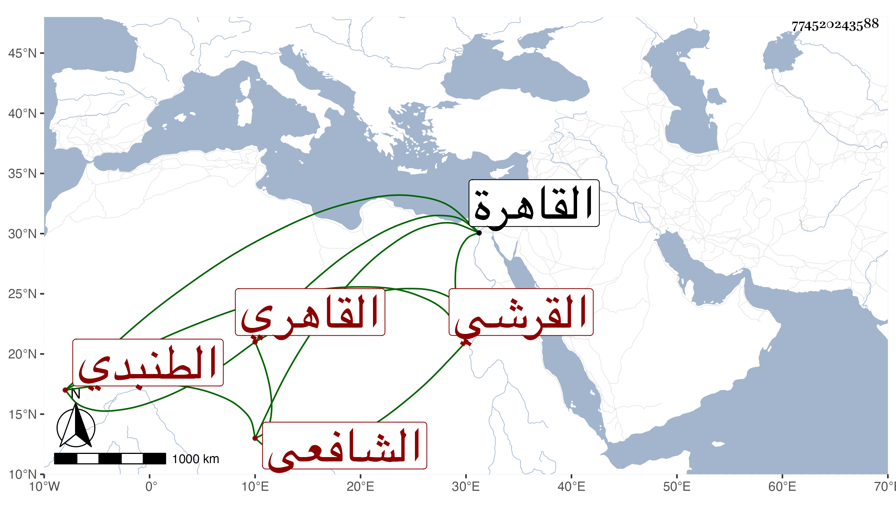

0902Sakhawi.DawLamic.ITO20230111-ara1.EIS1600.774520243588
Biography ID: 774520243588
680
محمد بن عمر بن علي بن أحمد بن محمد بن عبد الباقي بن محمد بن النبيه الجمال أبو عبد الله بن أبي حفص بن نفيس الدين أبي الحسن القرشي الطنبدي القاهري الشافعي والد السراج عمر ويعرف بابن عرب . ولد في ثاني عشر ربيع الأول سنة أربع وخمسين وسبعمائة بالقاهرة ونشأ بها فحفظ القرآن والتنبيه وغيره واشتغل يسيرا وكان يذكر أنه سمع من إبرهيم بن أحمد الخشاب صحيح البخاري ومن ابن حاتم صحيح مسلم ومن أبي البقاء السبكي الشفا وكل ذلك ممكن وتعانى التوقيع قديما وهو في العشرين . وناب في القضاء بل ولي الحسبة ووكالة بيت المال غير مرة ثم بعد الثمانمائة اقتصر على نيابة القضاء ، وجرت له خطوب إلى أن انقطع بأخرة بمنزله مع صحة عقله وقوة جسده ثم توالت عليه الأمراض وتنصل ثم أنه سقط من مكان فانكسرت ساقه وأقام نحو أربعة أشهر ، ثم مات في ليلة الخميس ثامن رمضان سنة ست وأربعين عن اثنتين وتسعين سنة وزيادة . ذكره شيخنا في إنبائه قال وهو أقدم من بقي من طلبة العلم ونواب الشافعية رحمه الله . قلت وقد أشار للثناء عليه وعلى سلفه ابن الملقن وابنه والصدر المناوي والدميري والأبشيطي وغيرهم في عرض ولده حسبما ذكرته في ترجمته من المعجم . وهو خال نجم الدين محمد بن علي الطنبدي الذي شاركه في كونه ناب في القضاء وولي الحسبة والوكالة . ومات في آخر ذاك القرن سنة ثمانمائة .
